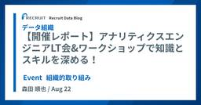
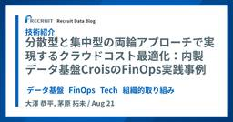
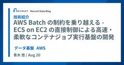
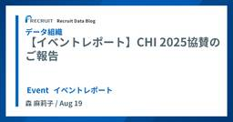

Recruit Data Blog
フィード

【開催レポート】アナリティクスエンジニアLT会&ワークショップで知識とスキルを深める！
Recruit Data Blog
はじめに こんにちは、アナリティクスエンジニアの森田です。 2025年3月10日、データ推進室データマネジメント部では、情報
4日前

分散型と集中型の両輪アプローチで実現するクラウドコスト最適化：内製データ基盤CroisのFinOps実践事例
Recruit Data Blog
はじめに こんにちは。社内横断で利用されるデータ基盤 Crois の開発を担当している、大澤と茅原です。 2025年6月18日に開催され
5日前

AWS Batch の制約を乗り越える - ECS on EC2 の直接制御による高速・柔軟なコンテナジョブ実行基盤の開発
Recruit Data Blog
はじめに こんにちは。データエンジニアとして社内横断で使われるデータ基盤 Crois の開発を担当している青木です。 内製のジョブ実行基
6日前

【イベントレポート】CHI 2025協賛のご報告
Recruit Data Blog
はじめに こんにちは、Recruit Data Blog担当の森です。 リクルートは、2025年4月26日〜5月1日にパシフィコ横浜で
7日前

【イベントレポート】リクルート流データ基盤塾 第2弾の振り返りとアフタートークのご案内
Recruit Data Blog
はじめに こんにちは、Recruit Data Blog担当の森です。 2025年6月23日、当社現役データエンジニアが登壇する「リク
8日前
【イベントレポート】「アナリティクスエンジニアが語る」第1弾の軌跡と第2弾のご案内
Recruit Data Blog
はじめに こんにちは、Recruit Data Blog 担当の森です。 2025年8月1日に、当社のアナリティクスエンジニア3名が登壇するイ
1ヶ月前
実推薦モデルにおける有効なオフ方策評価手法の特定(半熟仮想株式会社との共同研究)
Recruit Data Blog
はじめに ユーザーの関心や嗜好に適したアイテムを推薦することは、ユーザーエクスペリエンスの向上や購買意欲の促進に直結するた
5ヶ月前
データ推進室 アドベントカレンダー振り返り
Recruit Data Blog
はじめに こんにちは！Recruit Data Blog 担当の安藤、玉野です。 今年は、データ推進室で初めてアドベントカレンダーを開催しまし
8ヶ月前
データモデリングでよく利用するBigQuery SQLのクエリパターン
Recruit Data Blog
本記事は、データ推進室 Advent Calendar 2024 24日目の記事です はじめに こんにちは。HR領域でアナリティクスエンジニアのテックリードをして
8ヶ月前
【スタディサプリ】LLMで英検エッセイ自動採点の評価フローを改善
Recruit Data Blog
はじめに こんにちは。機械学習エンジニアの田中健斗 (kent0304 ) です。まなび領域のスタディサプリで機械学習プロダクト・データ基盤の開
8ヶ月前
アナリティクスエンジニア組織で初のLT会を開催しました
Recruit Data Blog
はじめに こんにちは、アナリティクスエンジニアの林田です。 データ推進室 データマネジメント部では、情報共有やコミュニケーショ
8ヶ月前
検索＆推薦の統合モデルに関する研究動向
Recruit Data Blog
はじめに 機械学習エンジニアの長谷川麟太郎です。普段は住まい領域でデータ分析や機械学習のモデル作成などを担当しています。 デ
8ヶ月前
QCon SF 2024参加レポート
Recruit Data Blog
はじめに こんにちは、『ゼクシィ』・『カーセンサー』・『じゃらん』に従事するデータエンジニア・機械学習エンジニア組織のマネ
8ヶ月前
Microsoft Ignite 2024 in Chicago
Recruit Data Blog
We just hit up Chicago 🇺🇸 みなさんこんにちは、データ推進室データテクノロジーラボ部の桐生です。もうすぐクリスマスですね！みなさんの元
8ヶ月前
住まいマート開発チームにおける新規メンバー向けオンボーディングの取り組み
Recruit Data Blog
はじめに こんにちは！住まい領域アナリティクスエンジニアの半谷です。 住まい領域では、dbtを使ったデータマート開発をチーム
8ヶ月前
Tableau Server から Tableau Cloud への大規模お引越しプロジェクト
Recruit Data Blog
はじめに こんにちは、データ推進室マリッジ＆ファミリー・自動車・旅行データソリューション部自動車データソリューショングルー
8ヶ月前
dbt coalesce 2024参加記
Recruit Data Blog
はじめに 今年の10月初旬にアメリカのラスベガスで行われたdbt coalesce 2024にデータアナリティクスエンジニアの電電、木内、山
8ヶ月前
RecSys 2024出張報告
Recruit Data Blog
はじめに こんにちは。データ推進室の翁、林です。 今回はイタリアのバーリで開催された RecSys 2024 の参加報告をしたいと思います。 本記事
8ヶ月前